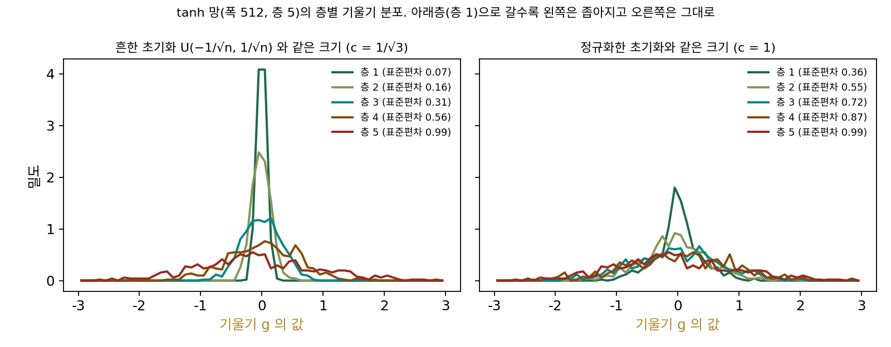
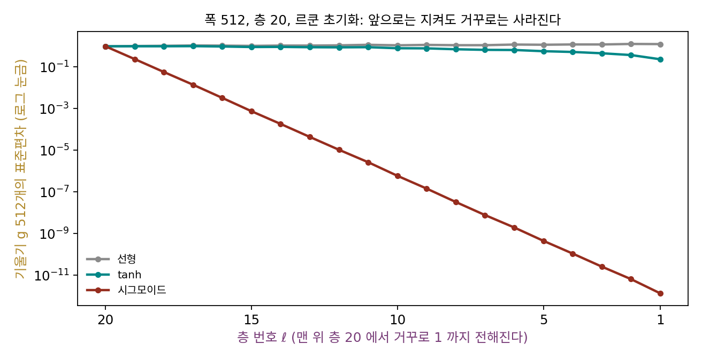

기울기 소실: 거꾸로 가는 신호는 자코비안을 곱한다
르쿤 초기화로 앞으로 가는 신호의 크기를 지켰다고 하자. 학습은 그 신호가 아니라 기울기로 한다. 손실의 기울기는 맨 위 층에서 출발해 층을 거꾸로 지나며 아래층까지 전해진다. 역전파는 층마다의 자코비안을 곱하는 일이었으니, 거꾸로 가는 길에도 곱셈이 스무 번 쌓인다. 그런데 거꾸로 가는 길에서 곱해지는 것은 가중치만이 아니다. 활성 함수의 미분도 함께 곱해진다. 앞으로 가는 신호를 지켜 놓으면 기울기도 저절로 지켜질까?
역사: 사라지는 기울기와 포화된 시그모이드

기울기가 층을 거꾸로 지나며 줄어드는 일을 처음 정면으로 따진 사람으로 흔히 제프 호흐라이터(Sepp Hochreiter)가 꼽힌다. 그는 1991년 뮌헨 공과대학에서 위르겐 슈미트후버(Jürgen Schmidhuber)의 지도로 쓴 졸업 논문(디플롬 논문) 「동적 신경망에 대한 연구(Untersuchungen zu dynamischen neuronalen Netzen)」에서, 오차 신호가 거꾸로 전해질 때 걸음마다 지수적으로 줄거나 커진다는 것을 보였다. 독일어로 쓴 논문이라 당시에는 널리 읽히지 못했다고 전해진다. 1994년에는 요슈아 벤지오(Yoshua Bengio), 파트리스 시마르(Patrice Simard), 파올로 프라스코니(Paolo Frasconi)가 「경사하강으로 긴 시간에 걸친 의존을 배우기는 어렵다」에서 순환 신경망을 두고 같은 어려움을 정리했다.
층을 깊게 쌓은 망이 왜 안 배워지는지를 실험으로 들여다본 것은 자비에 글로로(Xavier Glorot)와 벤지오의 2010년 논문 「깊은 순방향 신경망 학습의 어려움 이해하기」다. 이 장의 물음에서 인용한 첫 문장이 이 논문의 것이다. 그들은 학습 도중 층마다 활성 값의 분포와 거꾸로 전해진 기울기의 분포를 히스토그램으로 찍었다. 로지스틱 시그모이드 망에서는 출력의 평균이 0.5라는 성질 때문에 맨 위 은닉층이 학습 초기에 금세 0 쪽으로 포화되어(출력이 납작한 끝에 붙어) 오래 머물렀다. tanh 망에서 흔히 쓰던 초기화 U(−1/√n, 1/√n)을 쓰면 거꾸로 전해진 기울기의 분포가 아래층으로 갈수록 좁아졌다. 그들은 층마다의 자코비안의 특잇값이 1에서 멀면 학습이 어려워진다고 보고, 앞으로 가는 신호와 거꾸로 가는 기울기를 함께 지키도록 가중치의 분산을 정하는 「정규화한 초기화」를 냈다.
앞으로는 지키고 거꾸로는 잃는 망
르쿤 초기화(c = 1)로 뽑은 폭 512, 층 20의 망에서 활성 함수만 바꿔 보자. 맨 위 층의 합 z20에 닿는 기울기 g20을 표준정규 값 512개로 두고, 손실을 층 ℓ의 합으로 미분한 기울기 gℓ이 아래층으로 전해질 때의 표준편차를 찍는다.
| 활성 함수 | 층 20 의 합 z 의 표준편차 | 기울기 g 의 표준편차: 층 20 | 층 15 | 층 10 | 층 5 | 층 1 |
|---|---|---|---|---|---|---|
| 선형 | 0.942 | 0.99 | 1.04 | 1.11 | 1.18 | 1.27 |
| tanh | 0.161 | 0.99 | 0.915 | 0.799 | 0.577 | 0.237 |
| 시그모이드 | 0.493 | 0.99 | 0.000759 | 6.0 × 10⁻⁷ | 4.5 × 10⁻¹⁰ | 1.4 × 10⁻¹² |
시그모이드 망은 앞으로 가는 신호가 0.493으로 멀쩡히 남아 있는데, 거꾸로 가는 기울기는 첫 층에 닿을 때 1.4 × 10⁻¹²이 된다. 층을 하나 거꾸로 지날 때마다 기울기의 표준편차가 0.21배에서 0.25배 사이로 줄었고, 평균 0.238배를 열아홉 번 곱한 것이다. tanh 망은 그보다 훨씬 낫지만 첫 층의 기울기가 맨 위의 4분의 1이다.
왜 이렇게 다를까? 층 ℓ의 합은 zℓ = Wℓφ(zℓ−1)이다(φ는 활성 함수). 층의 합 zℓ를 zℓ−1로 미분한 자코비안이 Jℓ이고, 기울기는 그 전치를 곱해 한 층씩 내려간다.
가중치가 곱하는 분산 배율 c²은 앞으로 갈 때와 같다. 다른 것은 칸마다 곱해지는 활성 함수의 미분 φ′이다. 로지스틱 시그모이드의 미분은 가장 클 때(합이 0일 때)도 1/4이고, 표준편차 0.5쯤으로 흩어진 합에서 φ′의 제곱 평균의 제곱근은 0.237이다. 그래서 c = 1이면 층마다 기울기가 0.24배쯤으로 줄고, 이것이 표에서 잰 0.238이다. tanh의 미분은 0에서 1이라 줄어듦이 훨씬 적다. 이렇게 거꾸로 전해지는 기울기가 층마다 1보다 작은 배율을 곱받아 아래층에서 거의 0이 되는 것을 기울기 소실 (거꾸로 가며 기울기가 사라지는 일 / vanishing gradient)이라 한다. 배율이 1보다 크면 반대로 기울기가 폭발한다.
거꾸로 가는 길에는 앞으로 가는 길과 다른 점이 하나 더 있다. 앞으로 갈 때 칸 하나는 아래층 칸 n개(입력 쪽 폭, 팬인)를 더하지만, 거꾸로 갈 때 칸 하나는 위층 칸들(출력 쪽 폭, 팬아웃)의 기울기를 더한다. 폭이 층마다 같으면 둘이 같지만, 다르면 한 가지 c로 둘을 함께 1에 맞출 수 없다. 글로로와 벤지오의 정규화한 초기화는 두 폭의 가운데를 잡아 가중치의 분산을 2/(팬인 + 팬아웃)으로 둔다. 흔히 「글로로 초기화」나 「자비에 초기화」라 부른다.

ML에서: 깊은 망이 한때 배워지지 않던 까닭
2000년대 중반까지의 신경망은 흔히 시그모이드나 tanh를 썼고, 가중치는 흔히 쓰던 경험칙으로 뽑았다. 층을 서너 개 넘게 쌓으면 아래층의 기울기가 이 장의 표처럼 사라져, 아래층 가중치는 처음 뽑은 무작위 값에서 거의 움직이지 않았다. 2006년 무렵 제프리 힌턴(Geoffrey Hinton)과 동료들은 층을 하나씩 따로 미리 학습시켜 쌓는 방법으로 깊은 망을 학습시켰고, 이것이 글로로·벤지오 논문의 첫 문장이 말한 「2006년 이후」의 돌파구 가운데 하나였다. 글로로·벤지오는 비지도 사전 학습도 결국 초기화의 한 가지라고 보고, 그렇다면 처음부터 무작위 초기화를 잘 고르면 되지 않느냐고 물은 것이다.
같은 고민은 몇 년 뒤에도 이어졌다. 2014년 카렌 시모니안(Karen Simonyan)과 앤드루 지서먼(Andrew Zisserman)의 VGG 논문은 나쁜 초기화가 깊은 망에서 기울기를 불안정하게 만들어 학습을 멈출 수 있다고 적고, 무작위 초기화로도 학습되는 얕은 망(구성 A)을 먼저 학습시킨 뒤 그 층들로 더 깊은 망의 일부를 채우는 방법을 썼다. 그리고 논문을 낸 뒤에 글로로·벤지오의 무작위 초기화를 쓰면 이런 미리 학습 없이도 된다는 것을 알았다고 덧붙였다.
문제 4. 시그모이드의 배율을 키우면
시그모이드 망(폭 512, 층 20)의 기울기가 층마다 1/4쯤으로 준다면, 가중치를 네 배로 키워 c = 4로 하면 되지 않을까? (가) c = 1, 2, 4, 8에서 첫 층의 기울기는 맨 위 층의 몇 배인가? (나) 그때 층의 합 z의 표준편차는? (다) 시그모이드 망의 기울기를 지키는 c가 있는가? (풀어 본 뒤 위젯 2의 「문제 4」 단추로 확인해 보자.)

시그모이드 미분이 최대 1/4이니까 c = 4면 4 × 1/4 = 1, 기울기가 지켜지겠죠.

돌려 보세요. 앞으로 가는 신호도 같이 봐요.

c = 4에서 첫 층의 기울기가 맨 위의 1.45 × 10⁻⁴배예요. c = 1의 1.4 × 10⁻¹²보다는 훨씬 낫지만 1은 아니에요. c = 8이면 0.073배까지 오는데, 대신 층의 합의 표준편차가 첫 층에서 7.84, 맨 위에서 4.94예요.

1/4은 합이 정확히 0일 때만이야. c를 키우면 합이 크게 흩어지고, 그러면 시그모이드의 납작한 양 끝에 많이 떨어져서 미분이 더 작아져. 표준편차 4로 흩어진 합에서는 미분의 제곱 평균의 제곱근이 0.127, 8이면 0.091이야.

그러면 c를 키울수록 기울기의 배율 c × (미분의 크기)는 어떻게 될까요?

c가 커지는 만큼 미분이 작아져서 쫓아가도 잘 안 잡혀요. c = 8이면 8 × 0.091 = 0.73배쯤이라 아직 1이 안 되고, 그때는 칸 대부분이 포화돼서 출력이 0이나 1에 붙어 버려요. 기울기를 살리려고 키우면 신호가 포화되고, 신호를 살리려고 줄이면 기울기가 죽어요. 시그모이드는 신호와 기울기를 함께 만족하는 배율이 없는 거네요.

글로로·벤지오가 시그모이드가 깊은 망에 안 맞는다고 한 게 이 얘기였네요. 초기화만으로는 안 되고 활성 함수를 바꿔야 했던 거고요.
문제 5. 깔때기 망과 글로로 초기화
폭이 2048 → 1024 → 512 → 256 → 128로 반씩 줄어드는 선형 망(층 4)이 있다. 층마다 가중치의 분산을 (가) 1/팬인(앞으로 가는 신호를 지키는 르쿤), (나) 1/팬아웃, (다) 2/(팬인 + 팬아웃)(글로로)으로 잡는다. 셋 각각에서 앞으로 가는 신호와 거꾸로 가는 기울기는 4층을 지나 몇 배가 되는가?
르쿤 초기화가 앞으로를 지키니까 (가)가 정답이겠죠. 돌려 보면 앞으로는 0.970 → 0.892로 거의 그대로예요.
거꾸로도 볼까요? 맨 위 폭 128에서 출발한 기울기가 폭 2048까지 내려오면요?

0.965에서 0.254가 됐어요. 4분의 1이에요. 앞으로를 지키면 거꾸로가 줄어드네요.
거꾸로 갈 때는 위층 칸들의 기울기를 더하니까, 더하는 개수가 팬아웃이야. 분산을 1/팬인으로 잡으면 거꾸로의 분산 배율은 팬아웃/팬인 = 1/2이고, 네 층이면 표준편차가 (1/√2)⁴ = 1/4배. (나)는 거꾸로를 지키는 대신 앞으로가 0.970 → 3.57로 커지고.
(다)는 어떤가요? 둘 다 지킬까요?

아니요. 층마다 앞으로의 분산 배율이 2·팬인/(팬인 + 팬아웃) = 4/3, 거꾸로가 2/3이라 네 층이면 표준편차가 앞으로 1.78배, 거꾸로 0.44배예요. 실제로도 0.970 → 1.586, 0.965 → 0.451이고요. 둘 다 조금씩 어긋나는 대신 어느 쪽도 크게 무너지지 않는 가운데 자리예요. 폭이 같은 층에서는 세 규칙이 모두 같아지고요.

두 조원이 원하는 마감이 다를 때 중간 날짜로 정하는 거네요. 둘 다 조금씩 불만인데 누구도 밤을 새지는 않는.
문제 6. 층마다 기울기를 찍어 보면
민준이 르쿤 초기화의 시그모이드 망(폭 512, 층 20)을 학습률 0.1로 학습시키며, 첫 걸음에서 층마다 가중치 기울기 ∂𝓛/∂Wℓ의 크기(모든 칸을 이어 붙인 길이)를 찍었다. 첫 층이 6.7 × 10⁻¹⁰, 맨 위 층이 261이었다. (가) 첫 층 가중치의 한 칸은 한 걸음에 평균 얼마나 움직이는가? (나) 그 칸의 처음 크기(표준편차 0.0442)의 1%만큼 움직이려면 몇 걸음이 필요한가? (다) 같은 망을 tanh로 바꾸면 첫 층과 맨 위 층의 기울기 크기의 비는 얼마인가?
학습률이 0.1이면 걸음이 기울기의 0.1배니까, 첫 층 전체가 6.7 × 10⁻¹¹만큼 움직여요. 작긴 한데 몇천 걸음 하면 되지 않을까요?
칸 하나로 나눠 봐요. 512 × 512칸이 그 기울기의 길이를 나눠 가지면요?

기울기가 한 줄짜리 행렬(기울기 벡터 곱하기 입력 벡터)이라 칸 하나의 크기는 대략 전체 길이 ÷ 512예요. 한 걸음에 1.3 × 10⁻¹³이요. 0.0442의 1%인 4.4 × 10⁻⁴를 움직이려면… 34억 걸음이에요.
첫 층과 맨 위 층의 비는 2.6 × 10⁻¹²이야. 맨 위 층이 학습률 0.1로 움직이는 동안 첫 층은 사실상 학습률 10⁻¹³으로 움직이는 거야. tanh로 바꾸면 첫 층 ÷ 맨 위 층의 비가 1.42라서 오히려 첫 층이 조금 더 크고.

그러면 시그모이드 망은 학습하는 동안 실제로 무엇을 배우고 있을까요?
아래층은 처음 뽑은 무작위 값 그대로 얼어 있고, 맨 위 몇 층만 배우는 거예요. 층을 스무 개 쌓아도 사실상 무작위로 섞는 층 위에 얕은 망 하나를 얹은 거고요. 깊게 쌓은 의미가 없어요.
손실이 조금은 내려가니까 학습이 되는 줄 알았을 텐데, 층마다 기울기 크기를 찍어 봐야 알 수 있었겠네요. 앞으로는 텐서보드에 층별 기울기 노름부터 띄워 놔야겠어요. 조별 과제에서 발표 자료만 보고 「다 같이 했구나」 했는데 수정 기록을 열어 보니 한 명이 다 한 거였던 적이 있어요.